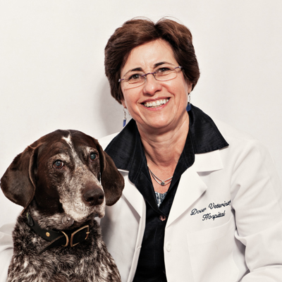
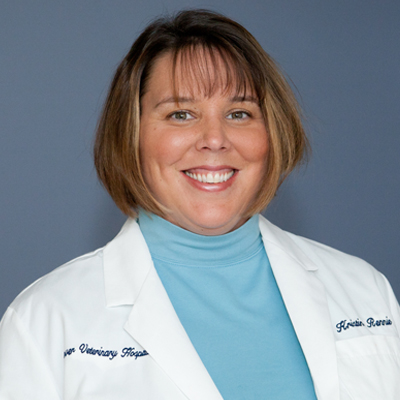
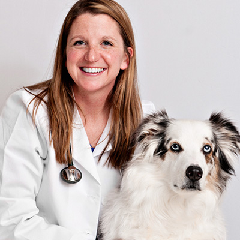
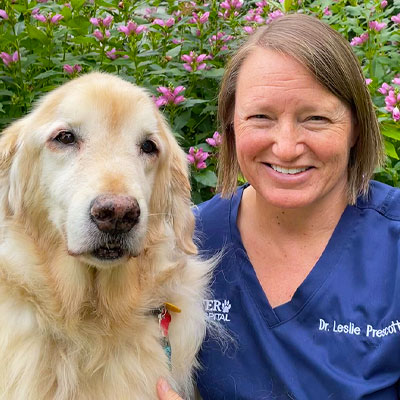

Meet Our Team
Experienced, compassionate care for your companions

Lee Spyridakis
DVM, DACVIM
Owner
Specialty: Internal Medicine
Education: University of New Hampshire, Ohio State University
Memberships: AVMA, NHVMA, ACVIM
Dedicated to providing the highest standard of care for companion animals.

Kristin Rennie
DVM, CVA
Associate Veterinarian
Specialty: Holistic Medicine, Acupuncture
Education: University of New Hampshire, Tufts University
Memberships: AVMA, NHVMA, IVAS
Passionate about integrating holistic therapies with conventional veterinary medicine.

Devin McCarthy
DVM
Associate Veterinarian
Specialty: Surgery, Dentistry
Education: University of New Hampshire, Tufts University
Memberships: AVMA, NHVMA
Enjoys the technical challenges of surgery and helping pets recover quickly.
Erica Richards
DVM
Associate Veterinarian
Specialty: Ultrasonography, Feline Medicine
Education: Emory and Henry College, Ross University
Memberships: AVMA, NHVMA, AAFP
Has a special interest in feline medicine and advanced diagnostic imaging.

Leslie Prescott
DVM
Associate Veterinarian
Specialty: Senior Care, Preventative Medicine
Education: Brown University, Tufts University
Memberships: AVMA, NHVMA
Committed to helping senior pets enjoy their golden years with comfort and dignity.